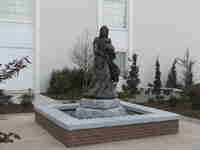

Benchmark Monument
1735 East 11th StreetTulsa, OK 74104 (One block east of Utica on 11th Street)
- telephone: 918-582-8600
- toll free: 1-877-581-8600
- email: info@benchmarkmonument.com

Kirk of the Hills Meditation Garden. Custom granite statue base fabricated and installed by Benchmark Monument.
Granites from around the world
Marble - Bronze
Locally Owned and Operated
- Custom stone carving and designs
- Sandblasting and Laser etching
- Cemetery restoration
- Architectural Embellishment
- Hand Diamond Etching by Artist